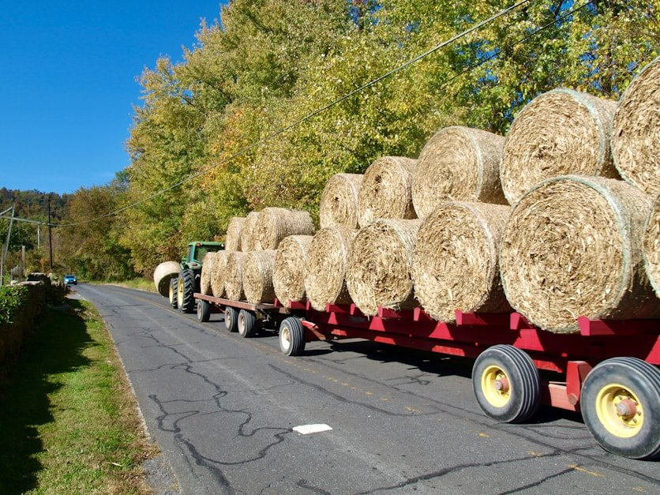
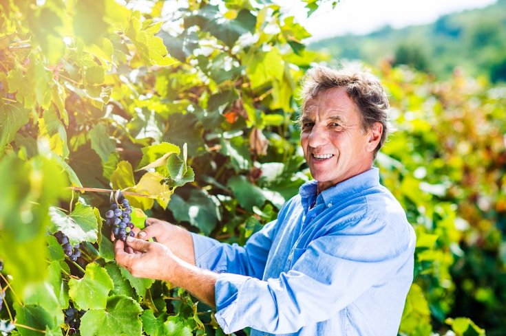
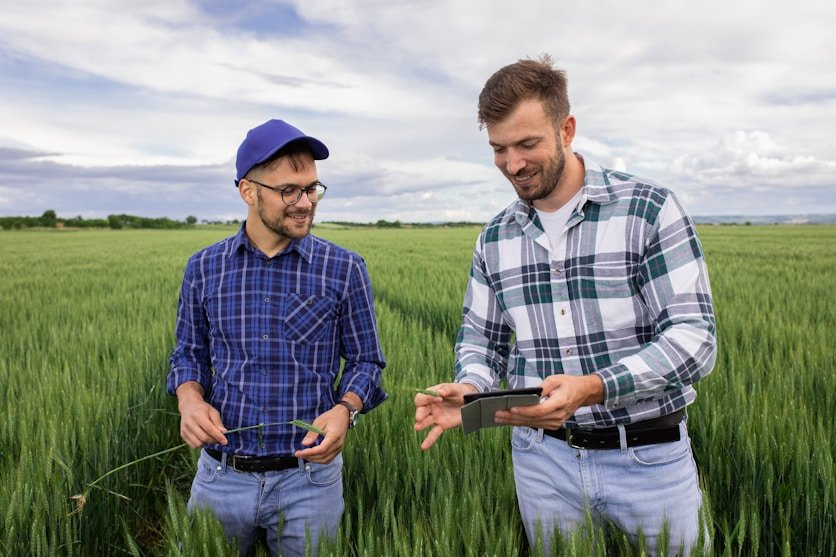

Latest SARDI news
- 
The delivery of more than 100 truckloads of donated hay to farming communities across South Australia, as a result of financial support…
- 
Latest AgTech for vineyards and orchards on show at the Nuriootpa and Loxton Research Centre.
- 
Cutting edge research helping farmers on the Eyre Peninsula.
-
The annual awards will recognise individuals and organisations for their leadership , commitment and innovation in sustainability across NSW.
-
The NSW Government will create more quality green spaces and increase ther tree canopy in Sydney bt 2022.